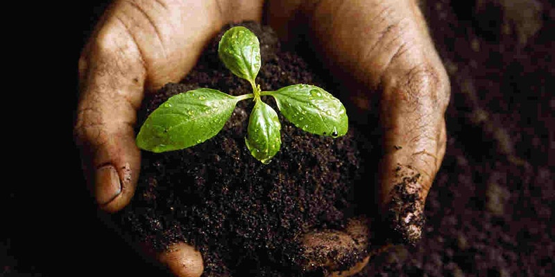

AUG 27
Backyard Compost Basics - a free webinar
by Central Vermont Solid Waste Management District
⬆️ Share 🤍 Like
Description
In this webinar, you'll learn how to compost successfully - whether you're starting for the first time, or are a compost veteran. We'll cover cold composting, as well as active and passive management techniques. You'll leave with strategies for jump-starting an old pile, keeping smells down and animals out, and how to compost safely during this time of COVID-19. We'll also review Vermont's food scrap ban from the landfill, and other options for managing food scraps in addition to home composting. Join Cassandra Hemenway, Outreach Manager at the Central Vermont Solid Waste Management District, trained and certified in turning food waste into soil! Also presenting is Theron Lay-Sleeper, CVSWMD outreach coordinator, and lifelong composter.
Date And Time
Thu, August 27, 2020
7:00 PM - 8:30 PM CEST